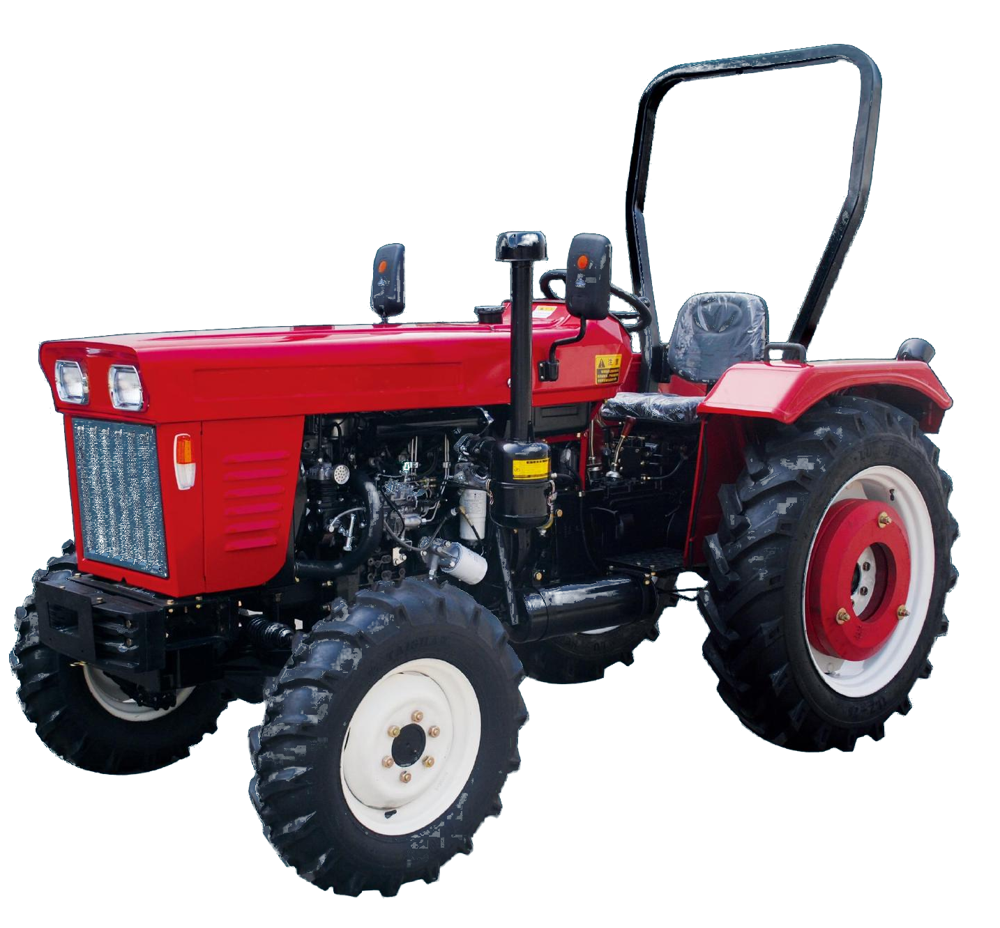
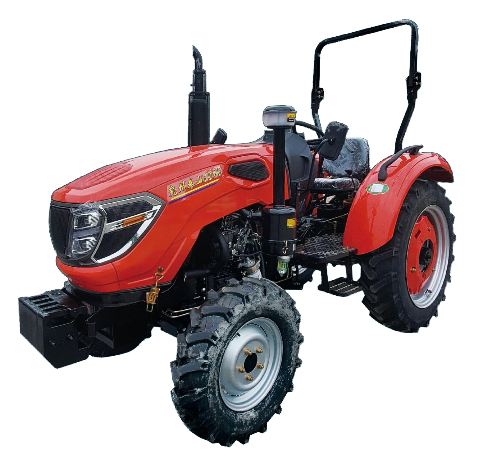

高效换挡，配置可选
支持 8+2 或 10+2 档变速；可选双作用离合器；液压转向，操纵灵活。

TTS350、TTS354、TTS400、TTS404。图片展示为资料册产品图；外观以实际机型配置为准。
适用于多样化田间与运输作业。以下参数按资料册中的单个型号列示。
| 技术参数 | TTS350 | TTS354 | TTS400 | TTS404 |
|---|---|---|---|---|
| 外形尺寸 长×宽×高 (mm) | 3125×1510×2025 | 3190×1476×2070 | 3126×1454×2060 | 3300×1410×2100 |
| 发动机功率 (kW) | 25.8 | 25.8 | 29.5 | 29.5 |
| 动力输出 (r/min) | 540/750 · 540/1000 · 750/1000 | |||
| 前轮距 (mm) | 1123 可调 | 1175 固定 | 1127 可调 | 1215 固定 |
| 后轮距 (mm) | 1170 可调 | 1170 可调 | 1104 可调 | 1205 可调 |
| 最大牵引力 (kN) | 7.5 | 10.3 | 7.8 | 12 |
| 最小使用质量 (kg) | ≥578 | ≥578 | ≥666 | ≥666 |
支持 8+2 或 10+2 档变速；可选双作用离合器；液压转向，操纵灵活。
离地间隙较高；可选 960 mm 窄轮距；可选多路液压输出；后轮距可调。
资料册列出多种发动机品牌选项，具体品牌与配置请按采购版本确认。

TTS450、TTS454、TTS500、TTS504。
四款机型尺寸与轮距选择不同，便于匹配地块、农具与作业需求。
| 技术参数 | TTS450 | TTS454 | TTS500 | TTS504 |
|---|---|---|---|---|
| 外形尺寸 长×宽×高 (mm) | 3230×1490×2360 | 3320×1490×2360 | 3325×1495×2360 | 3370×1495×2360 |
| 发动机功率 (kW) | 33.1 | 33.1 | 36.8 | 36.8 |
| 动力输出 (r/min) | 540/750 | 540/1000 | 750/1000 | 750/1000 |
| 前轮距 (mm) | 1210 可调 | 1250 固定 | 1200 可调 | 1220 固定 |
| 后轮距 (mm) | 1200 可调 | 1200 可调 | 1200 可调 | 1200 可调 |
| 最大牵引力 (kN) | 8.3 | 9.0 | 8.5 | 9.2 |
| 最小使用质量 (kg) | ≥740 | ≥740 | ≥850 | ≥850 |
支持 8+2 或 10+2 档变速；可选双作用离合器；双速动力输出；液压转向。
较高离地间隙，可用于温室与果园；后轮距无级调节。
匹配符合国Ⅲ排放要求的发动机，可选莱动、锡柴等品牌。

TTE500、TTE504、TTE600、TTE604。
资料册列示多种轮距、动力输出与离合器配置，适配不同作业方式。
| 技术参数 | TTE500 | TTE504 | TTE600 | TTE604 |
|---|---|---|---|---|
| 外形尺寸 长×宽×高 (mm) | 3500×1530×2100 | 3540×1530×2100 | 3600×1520×2650 | 3600×1520×2650 |
| 发动机功率 (kW) | 36.8 | 36.8 | 44.2 | 44.2 |
| 动力输出 (r/min) | 540/720 | |||
| 前轮距 (mm) | 1190–1490 可调 | 1200 固定 | 1130/1230/1330/1430 可调 | 1180/1400 可调 |
| 后轮距 (mm) | 1200–1400 可调 | 1200–1400 可调 | 1100–1500 可调 | 1205 可调 |
| 最大牵引力 (kN) | 9.6 | 10.1 | ≥9.3 | ≥13.97 |
| 最大提升力 (kN) | ≥8.3 | ≥8.3 | 9.95 | 9.95 |
8+2 档变速；可选梭式换挡以拓宽速度范围；强压提升器；可选双作用离合器。
双速动力输出；后轮无级调节；短轴距、转弯半径小。
流线型机罩；侧移式结构，布局紧凑。

TTE700、TTE704、TTE800、TTE804。
中大马力机型，资料册列出可调轮距、双速动力输出等配置。
| 技术参数 | TTE700 | TTE704 | TTE800 | TTE804 |
|---|---|---|---|---|
| 外形尺寸 长×宽×高 (mm) | 3600×1520×2650 | 3600×1520×2650 | 3600×1520×2650 | 3600×1520×2650 |
| 发动机功率 (kW) | 51.5 | 51.5 | 58.8 | 58.8 |
| 动力输出 (r/min) | 540/720 | |||
| 前轮距 (mm) | 1130/1230/1330/1430 可调 | 1180/1400 可调 | 1130/1230/1330/1430 可调 | 1180/1400 可调 |
| 后轮距 (mm) | 1100–1500 可调 | 1100–1500 可调 | 1100–1500 可调 | 1100–1500 可调 |
| 最大牵引力 (kN) | ≥9.3 | ≥15.69 | ≥9.3 | ≥18.7 |
| 最大提升力 (kN) | 12.36 | 12.36 | 14.11 | 14.11 |
8+2 档变速；可选梭式换挡；强压提升器；可选双作用离合器。
双速动力输出；后轮无级调节；短轴距、转弯半径小。
流线型机罩；侧移式结构，结构紧凑、部件布局合理。

TTB904、TTB1004、TTB1204。
大马力拖拉机系列，采用12+12档变速，配置可依采购需求确认。
| 技术参数 | TTB904 | TTB1004 | TTB1204 |
|---|---|---|---|
| 外形尺寸 长×宽×高 (mm) | 4050×1980×2800 | 4050×1980×2800 | 4050×1980×2800 |
| 发动机功率 (kW) | 66.2 | 73.5 | 88.2 |
| 动力输出 (r/min) | 540/720 | ||
| 前轮距 (mm) | 1350/1450/1550 可调 | 1350/1450/1550 可调 | 1350/1450/1550 可调 |
| 后轮距 (mm) | 1500–1800 可调 | 1500–1800 可调 | 1500–1800 可调 |
| 最大牵引力 (kN) | ≥19.7 | ≥19.7 | ≥19.7 |
12+12 档变速；梭式换挡；强压提升器；可选双作用离合器。
双速动力输出；后轮无级调节；短轴距、转弯半径小。
流线型机罩；侧移式结构，紧凑布局。
以上数据根据泰拖提供的产品资料册整理。单位及选装项按资料册记载；不同批次、市场版本或配置可能存在差异，请联系销售确认。